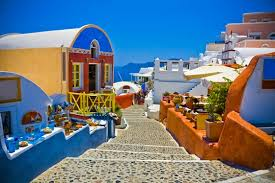
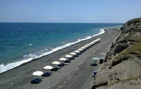
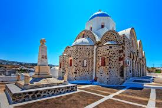

<
Documentation
Go to Main Menu
Santorini
Chapter 1: History
-
History of santorini
Santorini, officially Thira and classic Greek Thera, is an island in the southern Aegean Sea, about 200 km (120 mi) southeast of Greece's mainland.The island was the site of one of the largest volcanic eruptions in recorded history: the Minoan eruption (sometimes called the Thera eruption), which occurred about 3,600 years ago at the height of the Minoan civilization.The eruption left a large caldera surrounded by volcanic ash deposits hundreds of metres deep. It may have led indirectly to the collapse of the Minoan civilization on the island of Crete, 110 km (68 mi) to the south, through a gigantic tsunami. Another popular theory holds that the Thera eruption is the source of the legend of Atlantis.

fig 1 : ancient santorini
- Why the name Santorini is given
Santorini was named by the Latin Empire in the thirteenth century, and is a reference to Saint Irene, from the name of the old cathedral in the village of Perissa – the name Santorini is a contraction of the name Santa Irini.Before then, it was known as Kallístē, Strongýlē or Thēra. The name Thera was revived in the nineteenth century as the official name of the island and its main city, but the colloquial name Santorini is still in popular use.

fig 2 : santorini named after the cathredal
- Economy
Santorini's primary industry is tourism. Agriculture also forms part of its economy, and the island sustains a wine industry, based on the indigenous Assyrtiko grape variety. White varieties also include Athiri and Aidani, whereas red varieties include mavrotragano and mandilaria
Chapter 2: Modern Santorini
- Tourism
Tourism
Santorini's primary industry is tourism, particularly in the summer months. The expansion of tourism has resulted in the growth of the economy and population. Akrotiri is a major archaeological site, with ruins from the Minoan era. Santorini was ranked the world's top island by many magazines and travel sites, including the Travel+Leisure Magazine,the BBC, as well as the US News. An estimated 2 million tourists visit annually.

fig 3 : santorini tourism
- Architecture
The traditional architecture of Santorini is similar to that of the other Cyclades, with low-lying cubical houses, made of local stone and whitewashed or limewashed with various volcanic ashes used as colours. The unique characteristic is the common utilisation of the hypóskapha: extensions of houses dug sideways or downwards into the surrounding pumice. These rooms are prized because of the high insulation provided by the air-filled pumice, and are used as living quarters of unique coolness in the summer and warmth in the winter. These are premium storage space for produce, especially for wine cellaring: the Kánava wineries of Santorini.

fig 4 : Architecture of santorini
- Wine industry
The island remains the home of a small, but flourishing, wine industry, based on the indigenous grape variety, Assyrtiko, with auxiliary cultivations of two other Aegean varietals, Athiri and Aidani. The vines are extremely old and resistant to phylloxera (attributed by local winemakers to the well-drained volcanic soil and its chemistry), so the vines needed no replacement during the great phylloxera epidemic of the late 19th century. In their adaptation to their habitat, such vines are planted far apart, as their principal source of moisture is dew, and they often are trained in the shape of low-spiralling baskets, with the grapes hanging inside to protect them from the winds.

fig 5 : local wine of Samtorini

fig 6 : grape farming for wine
Chapter 3: Santorini Destinations
- Village
Oia Village on Santorini, Greece is a coastal town on the northwestern tip of Santorini, a Greek Aegean island. The town has whitewashed houses carved into the rugged clifftops, and overlooks a vast caldera filled with water. In a 19th-century mansion, the Naval Maritime Museum has exhibits on local seafaring history, including old figureheads, sailors’ chests and models of old ships. Nearby is the ruined Oia Castle, known for its sunset views.

fig 7 : village oia in santorini
- Paradisos
The quiet resort of Paradisos overlooks a long stretch of black-sand beach at Playa de Baxedes. Family friendly with shallow water and lifeguards in summer, the beach is backed by volcanic cliffs and leads to a small, local fishing harbor. Rustic guesthouses and vacation apartments sit on the clifftop, while a couple of laid-back, beachside tavernas with Aegean Sea views serve meze and fresh fish.

fig 8 : beach paradisos in santorini
- Vothonas
Surrounded by vineyards, peaceful Vothonas is a whitewashed village tucked into a steep valley, with many dwellings and elegant hotels set in cave houses carved out of volcanic rock. The Koutsoyannopoulos Wine Museum displays wine-making machinery and tools in a former wine cave, and the blue-domed Agia Anna Church has a tower with 9 bells. Alleys are dotted with tavernas, popular for their sea and sunset views

fig 9 : vothanos in santorini